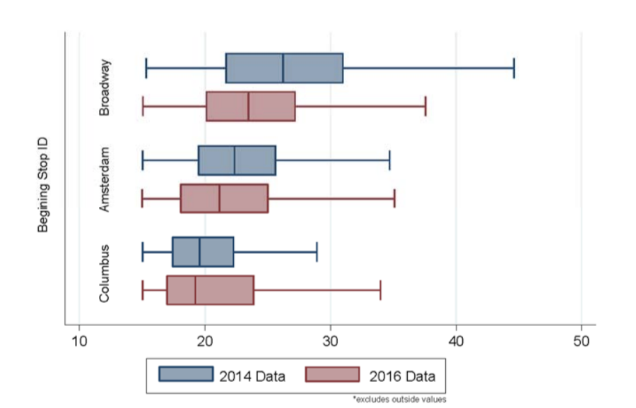

In this project, we collected primary data through on-site observations and distributed questionnaires, evaluated M86 performance before and after SBS conversion by Stata and Python coding, and presented recommendations through Bus Rapid Transit policy comparison.
From this figure generated by Python, the average trip times between West 86th Street Broadway and East 91st York Ave in 2014 is longer than those of 2016. 2016 trips also appear longer when examining the average trip times between West 86th Street Amsterdam and York Ave east 91st Street. There is no deny that the mean trip times have a high degree of variance; however, the trip times extracted from the historical data match the conclusions drawn from primary data analysis, which indicates that there was a decrease in trip time for a typical Wednesday in 2014 and that of 2016.